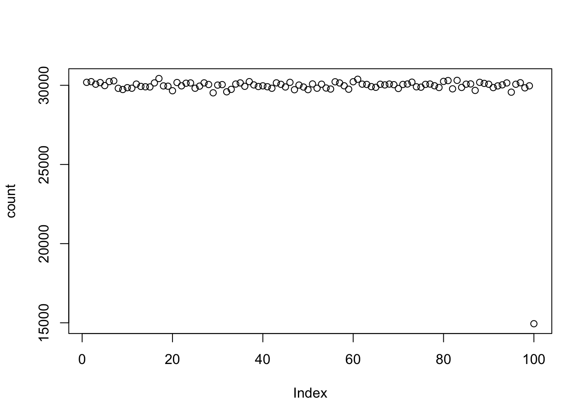

1+68## [1] 6950-3## [1] 479/3## [1] 3142*5## [1] 710jawbreakers = 10
cost = 25
jawbreakers * cost## [1] 250cost/jawbreakers## [1] 2.5ed <- length(100)
for (i in 1:100) {
ed[i] <- i
}
print(ed)## [1] 1 2 3 4 5 6 7 8 9 10 11 12 13 14 15 16 17
## [18] 18 19 20 21 22 23 24 25 26 27 28 29 30 31 32 33 34
## [35] 35 36 37 38 39 40 41 42 43 44 45 46 47 48 49 50 51
## [52] 52 53 54 55 56 57 58 59 60 61 62 63 64 65 66 67 68
## [69] 69 70 71 72 73 74 75 76 77 78 79 80 81 82 83 84 85
## [86] 86 87 88 89 90 91 92 93 94 95 96 97 98 99 100edd <- seq(1,100,1)
print(edd)## [1] 1 2 3 4 5 6 7 8 9 10 11 12 13 14 15 16 17
## [18] 18 19 20 21 22 23 24 25 26 27 28 29 30 31 32 33 34
## [35] 35 36 37 38 39 40 41 42 43 44 45 46 47 48 49 50 51
## [52] 52 53 54 55 56 57 58 59 60 61 62 63 64 65 66 67 68
## [69] 69 70 71 72 73 74 75 76 77 78 79 80 81 82 83 84 85
## [86] 86 87 88 89 90 91 92 93 94 95 96 97 98 99 100eddie <- sum(seq(1,100,1))
print(eddie)## [1] 5050int_sum <- function(x, y) {
jeff_sum = 0
#Switch x and y if (x > y) -- enables for loop
if (x > y){
temp = x
x = y
y = temp
}
for (i in x:y){
jeff_sum = jeff_sum + i
}
return(jeff_sum)
}
int_sum(5,1)## [1] 15odd_nums <- seq(1,100,2)
print(odd_nums)## [1] 1 3 5 7 9 11 13 15 17 19 21 23 25 27 29 31 33 35 37 39 41 43 45
## [24] 47 49 51 53 55 57 59 61 63 65 67 69 71 73 75 77 79 81 83 85 87 89 91
## [47] 93 95 97 99prime_numbers <- c()
for (i in 3:1000) {
prime = TRUE
for (j in 2:(i-1)) {
if (i %% j == 0) {
prime = FALSE
}
}
if (prime == TRUE) {
prime_numbers <- c(prime_numbers,i)
}
}
print(prime_numbers)## [1] 3 5 7 11 13 17 19 23 29 31 37 41 43 47 53 59 61
## [18] 67 71 73 79 83 89 97 101 103 107 109 113 127 131 137 139 149
## [35] 151 157 163 167 173 179 181 191 193 197 199 211 223 227 229 233 239
## [52] 241 251 257 263 269 271 277 281 283 293 307 311 313 317 331 337 347
## [69] 349 353 359 367 373 379 383 389 397 401 409 419 421 431 433 439 443
## [86] 449 457 461 463 467 479 487 491 499 503 509 521 523 541 547 557 563
## [103] 569 571 577 587 593 599 601 607 613 617 619 631 641 643 647 653 659
## [120] 661 673 677 683 691 701 709 719 727 733 739 743 751 757 761 769 773
## [137] 787 797 809 811 821 823 827 829 839 853 857 859 863 877 881 883 887
## [154] 907 911 919 929 937 941 947 953 967 971 977 983 991 997sample(1:100, 100, replace=T)## [1] 74 73 13 65 95 34 27 76 1 79 56 80 7 21 34 14 78
## [18] 11 52 84 63 87 31 76 53 83 64 30 99 38 83 92 29 31
## [35] 42 48 51 74 36 85 26 2 96 5 17 68 72 13 82 29 96
## [52] 10 3 27 15 30 99 50 15 33 54 20 84 17 7 50 22 78
## [69] 81 35 12 39 60 15 75 57 68 7 2 65 54 88 60 30 100
## [86] 34 47 49 54 6 84 54 37 4 27 70 51 34 20 42sample(1:100, 100, replace=T)## [1] 80 100 53 69 54 32 5 72 65 72 94 73 15 43 30 30 19
## [18] 98 36 82 38 84 2 93 54 94 78 83 22 55 52 69 17 13
## [35] 16 37 74 81 90 46 73 49 31 61 42 21 94 95 3 26 31
## [52] 65 31 92 87 51 8 86 34 41 18 42 24 26 89 42 60 37
## [69] 91 13 67 75 61 27 27 1 91 13 26 2 91 98 80 8 73
## [86] 74 28 1 6 23 51 96 93 20 81 1 56 29 25 59x <- c(1,2,3,4,5,6,7,8,9)
jeff_mean <- function(x) {
func_mean <- 0
for (i in 1:length(x)) {
func_mean <- func_mean + (x[i]/length(x))
}
return(func_mean)
}
jeff_mean(x)## [1] 5x <- c(1,1,1,1,2,2,3,3,3,4,4,4,4)
jeff_mode <- function(x) {
y <- c()
mode_list <- c()
x_copy <- x
for (i in 1:length(x)) {
y[i] <- length(which(x %in% x[i]))
}
max_count_pos <- match(max(y),y)
max_count <- max(y)
#Check for multiple modes
for (i in 1:length(x)) {
if (y[i] == max_count) {
if ((x[i] %in% x_copy[-1]) == FALSE) {
mode_list <- c(mode_list,x[i])
}
}
x_copy <- x_copy[-1]
}
return(mode_list)
}
jeff_mode(x)## [1] 1 4x <- c(1,2,3,4,5,6,7,8,9)
jeff_median <- function(x) {
while (length(x) > 2) {
loc <- match(c(max(x),min(x)),x)
x <- x[-loc]
}
if (length(x) == 2) {
x <- (x[1]+x[2])/2
}
return(x)
}
jeff_median(x)## [1] 5x <- c(1,2,3,4,5,6,7,8,9)
jeff_range <- function(x) {
func_range <- max(x)-min(x)
return(func_range)
}
jeff_range(x)## [1] 8x <- c(1,2,3,4,5,6,7,8,9)
jeff_sd <- function(x) {
func_mean <- mean(x)
var <- 0
for (i in 1:length(x)) {
var <- var + (func_mean - x[i])^2
var <- var/length(x)
stdev <- sqrt(var)
}
return(stdev)
}
jeff_sd(x)## [1] 1.37642hi <- "hello there"
nchar(hi)## [1] 11name <- "my name jeff"
word_count <- length(strsplit(name,' ')[[1]])
print(word_count)## [1] 3alice <- "If I had a world of my own, everything would be nonsense. Nothing would be what it is, because everything would be what it isn't. And contrary wise, what is, it wouldn't be. And what it wouldn't be, it would."
sentence_count <- length(strsplit(alice,"\\.")[[1]])
print(sentence_count)## [1] 4strsplit(alice,'\\.')[[1]]## [1] "If I had a world of my own, everything would be nonsense"
## [2] " Nothing would be what it is, because everything would be what it isn't"
## [3] " And contrary wise, what is, it wouldn't be"
## [4] " And what it wouldn't be, it would"alice <- "Curiouser and curiouser!"
find <- "u"
count <- length(which(strsplit(alice, "")[[1]]==find))
print(count)## [1] 4alice <- "If I had a world of my own, everything would be nonsense. Nothing would be what it is, because everything would be what it isn't. And contrary wise, what is, it wouldn't be. And what it wouldn't be, it would."
find <- "everything"
exist <- grep(find, alice)
print(exist)## [1] 1current_time <- as.numeric(Sys.time())
print(current_time)## [1] 1548955474start_time <- as.numeric(Sys.time())
## Start example code
ed <- length(100)
for (i in 1:100) {
ed[i] <- i
}
## End example code
end_time <- as.numeric(Sys.time())
run_time <- end_time - start_time
print(run_time)## [1] 0.03837299txt_data <- scan(file = "insert_file_here.txt")
csv_data <- csv.read(file = "insert_file_here.csv")jeff_file <- file("output.txt")
writeLines(c("Hello","World"), jeff_file)
close(jeff_file)data <- replicate(20, runif(20, min = 0, max = 100))
print(data)## [,1] [,2] [,3] [,4] [,5] [,6]
## [1,] 31.4571414 86.906644 52.401972 87.12893 98.576842 98.394633
## [2,] 1.4691139 33.524129 2.921018 61.67209 34.461451 87.116235
## [3,] 20.0109409 18.151245 12.684381 85.36001 44.245597 44.805776
## [4,] 0.3753518 97.199982 69.379139 20.03038 30.901071 64.702894
## [5,] 97.1394680 8.152514 66.592529 76.90438 61.885633 63.244258
## [6,] 88.8444053 4.654671 53.767449 10.58691 4.825884 73.667101
## [7,] 41.1011951 37.212192 10.712585 25.31126 94.522315 87.442303
## [8,] 74.7044157 30.870774 69.370495 78.38070 30.729418 63.031620
## [9,] 25.7454852 3.517468 59.029936 92.53954 87.133791 85.724566
## [10,] 98.3736525 41.426747 59.071611 61.48672 36.168366 25.673936
## [11,] 2.9443457 85.590905 52.757802 43.22145 87.148964 78.386712
## [12,] 50.6110846 50.696509 20.342389 97.29020 77.104251 34.136409
## [13,] 47.5325615 1.597625 67.800964 79.11165 72.831853 79.100410
## [14,] 61.1402216 83.240608 82.218820 90.02878 57.920768 79.287762
## [15,] 95.9651229 81.922990 25.353330 35.57343 86.838417 5.283929
## [16,] 99.4357729 98.673542 74.925314 98.19676 40.888527 27.180527
## [17,] 1.1273218 25.407565 72.309543 62.46683 46.115070 81.858068
## [18,] 61.6317487 9.672096 19.749049 40.58127 20.147632 57.971726
## [19,] 42.1321413 97.750190 39.271959 67.06472 28.273787 77.201649
## [20,] 55.9793032 38.418550 48.133140 82.19791 9.797905 54.937402
## [,7] [,8] [,9] [,10] [,11] [,12]
## [1,] 86.234410 71.83161 27.485773 1.427863 45.276645 36.5355199
## [2,] 20.353518 28.40820 12.736577 96.857118 41.785206 94.6034154
## [3,] 24.901712 56.73553 35.014047 53.662358 22.434556 18.0230673
## [4,] 9.360377 61.68772 3.559320 64.457307 29.243427 63.5729277
## [5,] 18.302980 74.04338 74.850867 46.236614 44.280584 83.6822500
## [6,] 23.942694 79.66843 65.065590 7.969797 90.353722 0.1627712
## [7,] 3.641830 94.93027 44.219940 70.413352 43.835958 80.2723496
## [8,] 14.241791 22.54540 45.620271 78.244237 89.330934 97.5297167
## [9,] 25.513582 12.30240 62.658352 55.160862 12.868104 88.6039966
## [10,] 65.179191 93.97080 44.890635 46.526249 24.255823 23.3118317
## [11,] 36.496213 31.71191 75.425652 62.409055 81.021143 19.0646757
## [12,] 77.054885 35.96304 96.152488 73.687682 75.531308 92.7939685
## [13,] 91.540194 65.33212 5.768841 28.264844 70.876150 81.0454812
## [14,] 84.444747 49.34543 20.155970 50.417203 49.579343 37.3480317
## [15,] 8.724243 24.00461 27.502379 22.363631 96.759060 18.1283930
## [16,] 10.338000 42.13198 95.679451 35.959550 5.629505 60.1208133
## [17,] 75.430309 99.49244 29.877436 67.978876 64.054276 39.5095295
## [18,] 55.466086 18.70538 1.360393 7.064508 3.334826 59.6070721
## [19,] 6.413944 59.58653 94.585948 63.122865 89.521718 67.4386848
## [20,] 42.493176 48.70948 55.742465 39.340578 30.831693 43.2118950
## [,13] [,14] [,15] [,16] [,17] [,18] [,19]
## [1,] 62.779915 61.121792 57.794058 74.594839 98.23823 80.968834 49.97782
## [2,] 40.719995 91.222764 24.282697 66.195012 98.40603 21.233762 99.23356
## [3,] 2.786428 95.043149 73.041859 28.843089 35.57746 37.298626 14.23888
## [4,] 30.332172 32.006148 61.574199 9.737269 50.53155 51.096936 50.33491
## [5,] 98.153407 55.544029 37.532662 11.360765 80.18527 1.117351 89.16841
## [6,] 39.946326 4.061994 79.467713 28.952362 11.52466 5.726606 48.41759
## [7,] 21.662266 67.973979 12.626663 6.536698 93.89845 1.346892 17.09973
## [8,] 36.754704 1.348358 8.452038 64.811484 65.49472 70.222658 41.89680
## [9,] 41.921581 71.924561 56.584596 99.900017 17.58525 87.043757 54.54843
## [10,] 47.071638 8.391750 97.339555 99.134513 41.50335 70.171305 85.05052
## [11,] 28.189255 64.578989 13.719954 1.762156 12.88886 61.596608 82.26932
## [12,] 34.495437 93.080743 68.765760 76.282477 42.49233 81.787674 89.44983
## [13,] 6.570352 89.543021 54.422667 86.185771 72.90877 45.927517 11.31806
## [14,] 30.783175 25.539473 7.024057 68.832128 35.04147 67.108710 15.02747
## [15,] 3.040351 72.063702 92.876910 76.201409 94.74137 43.236100 54.62234
## [16,] 30.215260 30.568119 77.841402 75.936426 91.34380 64.229647 17.08602
## [17,] 30.008453 15.248993 33.231451 83.170194 73.48105 33.342065 86.67047
## [18,] 83.920470 11.630493 40.408757 69.919475 16.17758 76.517058 94.86248
## [19,] 47.984758 40.919392 22.420912 15.213760 36.07798 95.255757 17.87431
## [20,] 74.100488 39.497353 61.548491 11.983465 50.31913 70.480059 89.42036
## [,20]
## [1,] 32.025505
## [2,] 52.079154
## [3,] 90.138822
## [4,] 79.052454
## [5,] 64.880654
## [6,] 17.330784
## [7,] 39.329453
## [8,] 34.357286
## [9,] 30.652089
## [10,] 50.416355
## [11,] 70.601327
## [12,] 9.262062
## [13,] 4.286412
## [14,] 28.315985
## [15,] 26.109251
## [16,] 11.877275
## [17,] 8.204687
## [18,] 26.497295
## [19,] 29.194037
## [20,] 19.767617data <- replicate(20, runif(20, min = 0, max = 100))
write.csv(data, file = "data_comma.csv", sep = ",")
write.csv(data, file = "data_tab.csv", sep = "\t")List the numbers from 1 to 100 with the following constraints. If the number can be divided by three evenly, then print Fizz instead of the number. If the number can be divided by five evenly, then print Buzz instead of the number. Finally, if the number can be divided by three and five evenly, then print FizzBuzz instead of the number.
total <- 1
for (i in 2:100) {
if (i %% 3 == 0) {
if (i %% 5 == 0) {
total <- paste(total,"FizzBuzz", sep = ", ")
}
else {
total <- paste(total,"Fizz", sep = ", ")
}
}
else if (i %% 5 == 0) {
total <- paste(total, "Buzz", sep = ", ")
}
else {
total <- paste(total, i, sep = ", ")
}
}
print(total)## [1] "1, 2, Fizz, 4, Buzz, Fizz, 7, 8, Fizz, Buzz, 11, Fizz, 13, 14, FizzBuzz, 16, 17, Fizz, 19, Buzz, Fizz, 22, 23, Fizz, Buzz, 26, Fizz, 28, 29, FizzBuzz, 31, 32, Fizz, 34, Buzz, Fizz, 37, 38, Fizz, Buzz, 41, Fizz, 43, 44, FizzBuzz, 46, 47, Fizz, 49, Buzz, Fizz, 52, 53, Fizz, Buzz, 56, Fizz, 58, 59, FizzBuzz, 61, 62, Fizz, 64, Buzz, Fizz, 67, 68, Fizz, Buzz, 71, Fizz, 73, 74, FizzBuzz, 76, 77, Fizz, 79, Buzz, Fizz, 82, 83, Fizz, Buzz, 86, Fizz, 88, 89, FizzBuzz, 91, 92, Fizz, 94, Buzz, Fizz, 97, 98, Fizz, Buzz"Take text as input, and be able to produce a table that shows the counts for each character in the text. This problem is related to the earlier easy problem asking you to count the number of times that a single letter appears in a text. The slightly harder problem is the more general version: count the frequencies of all unique characters in a text.
alice <- "curiouser and curiouser!"
table(unlist(strsplit(alice, split = "")))##
## ! a c d e i n o r s u
## 2 1 1 2 1 2 2 1 2 4 2 4Without using table:
alice <- "curiouser and curiouser!"
letters <- unique(unlist(strsplit(alice, split="")))
count <- c()
for (i in 1:length(letters)) {
count[i] <- length(which(strsplit(alice, "")[[1]]==letters[i]))
}
alice_data <- data.frame(count,letters)
print(alice_data)## count letters
## 1 2 c
## 2 4 u
## 3 4 r
## 4 2 i
## 5 2 o
## 6 2 s
## 7 2 e
## 8 2
## 9 1 a
## 10 1 n
## 11 1 d
## 12 1 !Test the random number generator for a flat distribution. Generate a few million random numbers between 0 and 100. Count the number of 0s, 1s, 2s, 3s, etc. all the way up to 100. Look at the counts for each of the numbers and determine if they are relatively equal. For example, you could plot the counts in Excel to make a histogram. If all of the bars are close to being flat, then each number had an equal chance of being selected, and the random number generator is working without bias.
numbers <- round(runif(3000000, min = 0, max = 100))
count <- c()
for (i in 1:100) {
count[i] <- length(which(numbers %in% i))
}
print(count)## [1] 30188 30231 30070 30172 29983 30234 30280 29810 29736 29850 29817
## [12] 30077 29931 29907 29897 30152 30429 29963 29944 29657 30176 29967
## [23] 30132 30151 29816 29949 30154 30051 29527 30014 30044 29590 29744
## [34] 30080 30153 29937 30232 30025 29925 29967 29910 29814 30155 30062
## [45] 29895 30187 29723 30017 29891 29728 30086 29817 30071 29830 29765
## [56] 30223 30149 29971 29752 30225 30382 30074 30055 29918 29875 30067
## [67] 30026 30079 30040 29800 30055 30082 30199 29906 29883 30059 30080
## [78] 29972 29862 30247 30299 29778 30313 29867 30072 30088 29678 30188
## [89] 30122 30069 29857 29964 30030 30150 29567 30068 30163 29840 29967
## [100] 14941plot(count)
Generate a matrix for a multiplication table. For example, the labels for the columns could be the numbers 1 to 10, and the labels for the rows could be the numbers 1 to 10. The contents of each of the cells in the matrix should be correct answer for multiplying the column value by the row value.
x <- seq(1, 10, 1)
data <- matrix(x, nrow = 10, ncol = 10)
for (i in 1:10) {
x <- seq(i, i*10, i)
data[,i] <- x
}
#data <- matrix(x, nrow = 10, ncol = 1)
print(data)## [,1] [,2] [,3] [,4] [,5] [,6] [,7] [,8] [,9] [,10]
## [1,] 1 2 3 4 5 6 7 8 9 10
## [2,] 2 4 6 8 10 12 14 16 18 20
## [3,] 3 6 9 12 15 18 21 24 27 30
## [4,] 4 8 12 16 20 24 28 32 36 40
## [5,] 5 10 15 20 25 30 35 40 45 50
## [6,] 6 12 18 24 30 36 42 48 54 60
## [7,] 7 14 21 28 35 42 49 56 63 70
## [8,] 8 16 24 32 40 48 56 64 72 80
## [9,] 9 18 27 36 45 54 63 72 81 90
## [10,] 10 20 30 40 50 60 70 80 90 100Turn any normal english text into an encrypted version of the text, and be able to turn any decrypted text back into normal english text. A simple encryption would be to scramble the alphabet such that each letter corresponds to a new randomly chosen (but unique) letter.
Your task here is to write an algorithm that can simulate playing the above depicted Snakes and Ladders board. You should assume that each roll of the dice produces a random number between 1 and 6. After you are able to simulate one played game, you will then write a loop to simulate 1000 games, and estimate the average number of dice rolls needed to successfully complete the game.
move <- 0
count <- replicate(1000, 0)
for (i in 1:1000) {
spot <- 1
while (spot <= 25) {
move <- sample(1:6, 1)
spot <- spot + move
if (spot == 3) {
spot <- 11
}
else if (spot == 6) {
spot <- 17
}
else if (spot == 9) {
spot <- 18
}
else if (spot == 10) {
spot <- 12
}
else if (spot == 14) {
spot <- 4
}
else if (spot == 19) {
spot <- 8
}
else if (spot == 22) {
spot <- 20
}
else if (spot == 24) {
spot <- 16
}
count[i] = count[i] + 1
}
}
avg_moves <- mean(count)
print(avg_moves)## [1] 8.951Assume that a pair of dice are rolled. Using monte carlo-simulation, compute the probabilities of rolling a 2, 3, 4, 5, 6, 7, 8, 9, 10, 11, and 12, respectively.
The monte-hall problem is as follows. A contestant in a game show is presented with three closed doors. They are told that a prize is behind one door, and two goats are behind the other two doors. They are asked to choose which door contains the prize. After making their choice the game show host opens one of the remaining two doors (not chosen by the contestant), and reveals a goat. There are now two door remaining. The contestant is asked if they would like to switch their choice to the other door, or keep their initial choice. The correct answer is that the participant should switch their initial choice, and choose the other door. This will increase their odds of winning. Demonstrate by monte-carlo simulation that the odds of winning is higher if the participant switches than if the participants keeps their original choice.
Problem: You have 100 doors in a row that are all initially closed. You make 100 passes by the doors. The first time through, you visit every door and toggle the door (if the door is closed, you open it; if it is open, you close it). The second time you only visit every 2nd door (door 2, 4, 6, etc.). The third time, every 3rd door (door 3, 6, 9, etc.), etc, until you only visit the 100th door.
doors <- replicate(100, 0)
j = 1
for (i in 1:100) {
k = j
while (j <= 100) {
if (doors[j] == 0) {
doors[j] <- 1
}
else {
doors[j] <- 0
}
j = j + k
}
j = i + 1
}
print(doors)## [1] 1 0 0 1 0 0 0 0 1 0 0 0 0 0 0 1 0 0 0 0 0 0 0 0 1 0 0 0 0 0 0 0 0 0 0
## [36] 1 0 0 0 0 0 0 0 0 0 0 0 0 1 0 0 0 0 0 0 0 0 0 0 0 0 0 0 1 0 0 0 0 0 0
## [71] 0 0 0 0 0 0 0 0 0 0 1 0 0 0 0 0 0 0 0 0 0 0 0 0 0 0 0 0 0 1In this puzzle, write code to print out the entire “99 bottles of beer on the wall”" song.
i <- 99
lyrics_1 <- "bottles of beer on the wall,"
lyrics_2 <- "bottles of beer. Take one down, pass it around,"
lyrics_3 <- "bottles of beer on the wall!"
while (i > 0) {
each_lyric <- paste(i,lyrics_1,i,lyrics_2,i-1,lyrics_3)
print(each_lyric)
i = i -1
}## [1] "99 bottles of beer on the wall, 99 bottles of beer. Take one down, pass it around, 98 bottles of beer on the wall!"
## [1] "98 bottles of beer on the wall, 98 bottles of beer. Take one down, pass it around, 97 bottles of beer on the wall!"
## [1] "97 bottles of beer on the wall, 97 bottles of beer. Take one down, pass it around, 96 bottles of beer on the wall!"
## [1] "96 bottles of beer on the wall, 96 bottles of beer. Take one down, pass it around, 95 bottles of beer on the wall!"
## [1] "95 bottles of beer on the wall, 95 bottles of beer. Take one down, pass it around, 94 bottles of beer on the wall!"
## [1] "94 bottles of beer on the wall, 94 bottles of beer. Take one down, pass it around, 93 bottles of beer on the wall!"
## [1] "93 bottles of beer on the wall, 93 bottles of beer. Take one down, pass it around, 92 bottles of beer on the wall!"
## [1] "92 bottles of beer on the wall, 92 bottles of beer. Take one down, pass it around, 91 bottles of beer on the wall!"
## [1] "91 bottles of beer on the wall, 91 bottles of beer. Take one down, pass it around, 90 bottles of beer on the wall!"
## [1] "90 bottles of beer on the wall, 90 bottles of beer. Take one down, pass it around, 89 bottles of beer on the wall!"
## [1] "89 bottles of beer on the wall, 89 bottles of beer. Take one down, pass it around, 88 bottles of beer on the wall!"
## [1] "88 bottles of beer on the wall, 88 bottles of beer. Take one down, pass it around, 87 bottles of beer on the wall!"
## [1] "87 bottles of beer on the wall, 87 bottles of beer. Take one down, pass it around, 86 bottles of beer on the wall!"
## [1] "86 bottles of beer on the wall, 86 bottles of beer. Take one down, pass it around, 85 bottles of beer on the wall!"
## [1] "85 bottles of beer on the wall, 85 bottles of beer. Take one down, pass it around, 84 bottles of beer on the wall!"
## [1] "84 bottles of beer on the wall, 84 bottles of beer. Take one down, pass it around, 83 bottles of beer on the wall!"
## [1] "83 bottles of beer on the wall, 83 bottles of beer. Take one down, pass it around, 82 bottles of beer on the wall!"
## [1] "82 bottles of beer on the wall, 82 bottles of beer. Take one down, pass it around, 81 bottles of beer on the wall!"
## [1] "81 bottles of beer on the wall, 81 bottles of beer. Take one down, pass it around, 80 bottles of beer on the wall!"
## [1] "80 bottles of beer on the wall, 80 bottles of beer. Take one down, pass it around, 79 bottles of beer on the wall!"
## [1] "79 bottles of beer on the wall, 79 bottles of beer. Take one down, pass it around, 78 bottles of beer on the wall!"
## [1] "78 bottles of beer on the wall, 78 bottles of beer. Take one down, pass it around, 77 bottles of beer on the wall!"
## [1] "77 bottles of beer on the wall, 77 bottles of beer. Take one down, pass it around, 76 bottles of beer on the wall!"
## [1] "76 bottles of beer on the wall, 76 bottles of beer. Take one down, pass it around, 75 bottles of beer on the wall!"
## [1] "75 bottles of beer on the wall, 75 bottles of beer. Take one down, pass it around, 74 bottles of beer on the wall!"
## [1] "74 bottles of beer on the wall, 74 bottles of beer. Take one down, pass it around, 73 bottles of beer on the wall!"
## [1] "73 bottles of beer on the wall, 73 bottles of beer. Take one down, pass it around, 72 bottles of beer on the wall!"
## [1] "72 bottles of beer on the wall, 72 bottles of beer. Take one down, pass it around, 71 bottles of beer on the wall!"
## [1] "71 bottles of beer on the wall, 71 bottles of beer. Take one down, pass it around, 70 bottles of beer on the wall!"
## [1] "70 bottles of beer on the wall, 70 bottles of beer. Take one down, pass it around, 69 bottles of beer on the wall!"
## [1] "69 bottles of beer on the wall, 69 bottles of beer. Take one down, pass it around, 68 bottles of beer on the wall!"
## [1] "68 bottles of beer on the wall, 68 bottles of beer. Take one down, pass it around, 67 bottles of beer on the wall!"
## [1] "67 bottles of beer on the wall, 67 bottles of beer. Take one down, pass it around, 66 bottles of beer on the wall!"
## [1] "66 bottles of beer on the wall, 66 bottles of beer. Take one down, pass it around, 65 bottles of beer on the wall!"
## [1] "65 bottles of beer on the wall, 65 bottles of beer. Take one down, pass it around, 64 bottles of beer on the wall!"
## [1] "64 bottles of beer on the wall, 64 bottles of beer. Take one down, pass it around, 63 bottles of beer on the wall!"
## [1] "63 bottles of beer on the wall, 63 bottles of beer. Take one down, pass it around, 62 bottles of beer on the wall!"
## [1] "62 bottles of beer on the wall, 62 bottles of beer. Take one down, pass it around, 61 bottles of beer on the wall!"
## [1] "61 bottles of beer on the wall, 61 bottles of beer. Take one down, pass it around, 60 bottles of beer on the wall!"
## [1] "60 bottles of beer on the wall, 60 bottles of beer. Take one down, pass it around, 59 bottles of beer on the wall!"
## [1] "59 bottles of beer on the wall, 59 bottles of beer. Take one down, pass it around, 58 bottles of beer on the wall!"
## [1] "58 bottles of beer on the wall, 58 bottles of beer. Take one down, pass it around, 57 bottles of beer on the wall!"
## [1] "57 bottles of beer on the wall, 57 bottles of beer. Take one down, pass it around, 56 bottles of beer on the wall!"
## [1] "56 bottles of beer on the wall, 56 bottles of beer. Take one down, pass it around, 55 bottles of beer on the wall!"
## [1] "55 bottles of beer on the wall, 55 bottles of beer. Take one down, pass it around, 54 bottles of beer on the wall!"
## [1] "54 bottles of beer on the wall, 54 bottles of beer. Take one down, pass it around, 53 bottles of beer on the wall!"
## [1] "53 bottles of beer on the wall, 53 bottles of beer. Take one down, pass it around, 52 bottles of beer on the wall!"
## [1] "52 bottles of beer on the wall, 52 bottles of beer. Take one down, pass it around, 51 bottles of beer on the wall!"
## [1] "51 bottles of beer on the wall, 51 bottles of beer. Take one down, pass it around, 50 bottles of beer on the wall!"
## [1] "50 bottles of beer on the wall, 50 bottles of beer. Take one down, pass it around, 49 bottles of beer on the wall!"
## [1] "49 bottles of beer on the wall, 49 bottles of beer. Take one down, pass it around, 48 bottles of beer on the wall!"
## [1] "48 bottles of beer on the wall, 48 bottles of beer. Take one down, pass it around, 47 bottles of beer on the wall!"
## [1] "47 bottles of beer on the wall, 47 bottles of beer. Take one down, pass it around, 46 bottles of beer on the wall!"
## [1] "46 bottles of beer on the wall, 46 bottles of beer. Take one down, pass it around, 45 bottles of beer on the wall!"
## [1] "45 bottles of beer on the wall, 45 bottles of beer. Take one down, pass it around, 44 bottles of beer on the wall!"
## [1] "44 bottles of beer on the wall, 44 bottles of beer. Take one down, pass it around, 43 bottles of beer on the wall!"
## [1] "43 bottles of beer on the wall, 43 bottles of beer. Take one down, pass it around, 42 bottles of beer on the wall!"
## [1] "42 bottles of beer on the wall, 42 bottles of beer. Take one down, pass it around, 41 bottles of beer on the wall!"
## [1] "41 bottles of beer on the wall, 41 bottles of beer. Take one down, pass it around, 40 bottles of beer on the wall!"
## [1] "40 bottles of beer on the wall, 40 bottles of beer. Take one down, pass it around, 39 bottles of beer on the wall!"
## [1] "39 bottles of beer on the wall, 39 bottles of beer. Take one down, pass it around, 38 bottles of beer on the wall!"
## [1] "38 bottles of beer on the wall, 38 bottles of beer. Take one down, pass it around, 37 bottles of beer on the wall!"
## [1] "37 bottles of beer on the wall, 37 bottles of beer. Take one down, pass it around, 36 bottles of beer on the wall!"
## [1] "36 bottles of beer on the wall, 36 bottles of beer. Take one down, pass it around, 35 bottles of beer on the wall!"
## [1] "35 bottles of beer on the wall, 35 bottles of beer. Take one down, pass it around, 34 bottles of beer on the wall!"
## [1] "34 bottles of beer on the wall, 34 bottles of beer. Take one down, pass it around, 33 bottles of beer on the wall!"
## [1] "33 bottles of beer on the wall, 33 bottles of beer. Take one down, pass it around, 32 bottles of beer on the wall!"
## [1] "32 bottles of beer on the wall, 32 bottles of beer. Take one down, pass it around, 31 bottles of beer on the wall!"
## [1] "31 bottles of beer on the wall, 31 bottles of beer. Take one down, pass it around, 30 bottles of beer on the wall!"
## [1] "30 bottles of beer on the wall, 30 bottles of beer. Take one down, pass it around, 29 bottles of beer on the wall!"
## [1] "29 bottles of beer on the wall, 29 bottles of beer. Take one down, pass it around, 28 bottles of beer on the wall!"
## [1] "28 bottles of beer on the wall, 28 bottles of beer. Take one down, pass it around, 27 bottles of beer on the wall!"
## [1] "27 bottles of beer on the wall, 27 bottles of beer. Take one down, pass it around, 26 bottles of beer on the wall!"
## [1] "26 bottles of beer on the wall, 26 bottles of beer. Take one down, pass it around, 25 bottles of beer on the wall!"
## [1] "25 bottles of beer on the wall, 25 bottles of beer. Take one down, pass it around, 24 bottles of beer on the wall!"
## [1] "24 bottles of beer on the wall, 24 bottles of beer. Take one down, pass it around, 23 bottles of beer on the wall!"
## [1] "23 bottles of beer on the wall, 23 bottles of beer. Take one down, pass it around, 22 bottles of beer on the wall!"
## [1] "22 bottles of beer on the wall, 22 bottles of beer. Take one down, pass it around, 21 bottles of beer on the wall!"
## [1] "21 bottles of beer on the wall, 21 bottles of beer. Take one down, pass it around, 20 bottles of beer on the wall!"
## [1] "20 bottles of beer on the wall, 20 bottles of beer. Take one down, pass it around, 19 bottles of beer on the wall!"
## [1] "19 bottles of beer on the wall, 19 bottles of beer. Take one down, pass it around, 18 bottles of beer on the wall!"
## [1] "18 bottles of beer on the wall, 18 bottles of beer. Take one down, pass it around, 17 bottles of beer on the wall!"
## [1] "17 bottles of beer on the wall, 17 bottles of beer. Take one down, pass it around, 16 bottles of beer on the wall!"
## [1] "16 bottles of beer on the wall, 16 bottles of beer. Take one down, pass it around, 15 bottles of beer on the wall!"
## [1] "15 bottles of beer on the wall, 15 bottles of beer. Take one down, pass it around, 14 bottles of beer on the wall!"
## [1] "14 bottles of beer on the wall, 14 bottles of beer. Take one down, pass it around, 13 bottles of beer on the wall!"
## [1] "13 bottles of beer on the wall, 13 bottles of beer. Take one down, pass it around, 12 bottles of beer on the wall!"
## [1] "12 bottles of beer on the wall, 12 bottles of beer. Take one down, pass it around, 11 bottles of beer on the wall!"
## [1] "11 bottles of beer on the wall, 11 bottles of beer. Take one down, pass it around, 10 bottles of beer on the wall!"
## [1] "10 bottles of beer on the wall, 10 bottles of beer. Take one down, pass it around, 9 bottles of beer on the wall!"
## [1] "9 bottles of beer on the wall, 9 bottles of beer. Take one down, pass it around, 8 bottles of beer on the wall!"
## [1] "8 bottles of beer on the wall, 8 bottles of beer. Take one down, pass it around, 7 bottles of beer on the wall!"
## [1] "7 bottles of beer on the wall, 7 bottles of beer. Take one down, pass it around, 6 bottles of beer on the wall!"
## [1] "6 bottles of beer on the wall, 6 bottles of beer. Take one down, pass it around, 5 bottles of beer on the wall!"
## [1] "5 bottles of beer on the wall, 5 bottles of beer. Take one down, pass it around, 4 bottles of beer on the wall!"
## [1] "4 bottles of beer on the wall, 4 bottles of beer. Take one down, pass it around, 3 bottles of beer on the wall!"
## [1] "3 bottles of beer on the wall, 3 bottles of beer. Take one down, pass it around, 2 bottles of beer on the wall!"
## [1] "2 bottles of beer on the wall, 2 bottles of beer. Take one down, pass it around, 1 bottles of beer on the wall!"
## [1] "1 bottles of beer on the wall, 1 bottles of beer. Take one down, pass it around, 0 bottles of beer on the wall!"